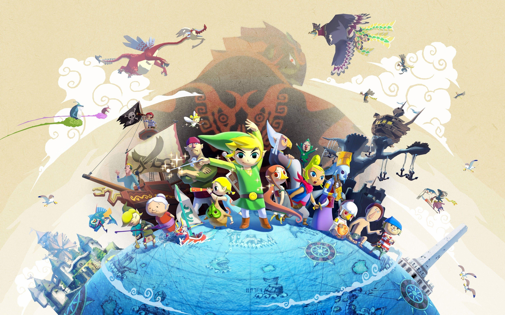
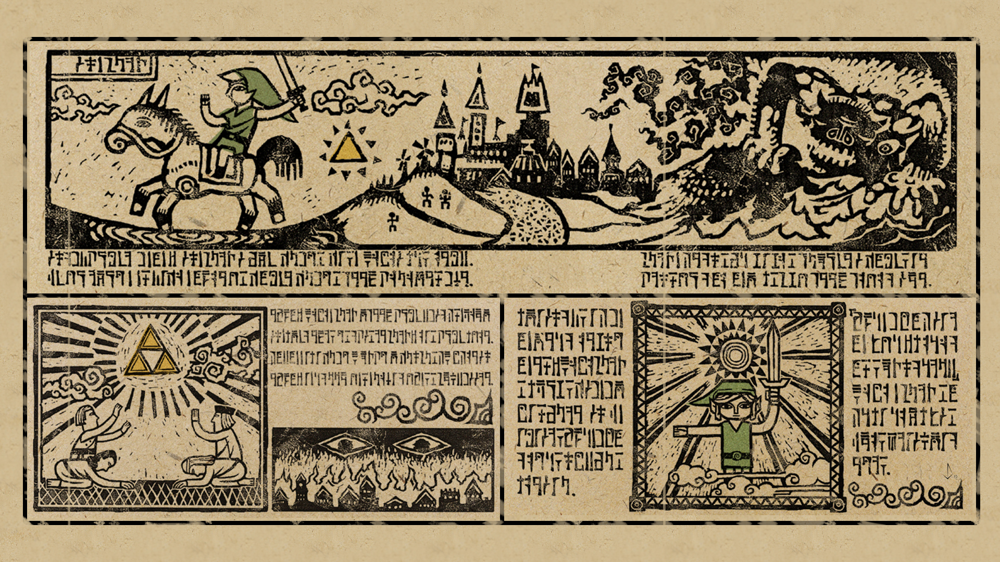

The Plot
A long time after the events from Ocarina of Time, the entire kingdom of Hyrule was flooded. The cause of the flood was due to the gods of the world, trying to protect all of people from Ganon. This forced every living creature to adapt or evolve by living on small islands all seperated by the great sea. Ganon was trapped under the sea in the remains of Hyrule castle which was given a barrier by the gods so the castle itself would'nt flood. The gods also evolved the Zoras(Fish people) into Ritos(Bird people) so that no one could rescue Ganon from the bottom of the sea. Unfourtanatly Ganon was not held under the sea forever, and reached the surface where he started recking havock. His goal was to find the reancarnated Link and Zelda to obatian their triforces and use it to rule the world.
 wallapapercave
The game starts with Links little sister giving him a present for his birthday and his grandma giving him a tunic similar to the hero of time from ocarina of time. After this priates arrive to the island where this giant bird was chasing them and then the bird takes Links sister. Link is determined to save his sister and convinces the captain of the pirates, Tetra, to take him where the bird went. The pirates take him to the Forsaken Fortress which is where the bird lives, and as Link traverses through the fortress he realizes the bird has stolen multiple little kids. Before he can rescue any of them the bird spots Link and takes him to Ganon, in which Ganon commands the bird to throw him into the sea. Link then wakes up on the side of an island in a small red boat called the King of Red Lions, which can talk. The boat tells link about Ganon and that he is stealing little kids to find Zelda to take her triforce. Link is then instructed by the boat that the only way to save his sister is by obtaining the master sword, but first he must get 3 pearls that are in the hands of 3 different anccient creatures.
 wall.alphacoders
Important Locations
- Outset Island
- Forsaken Fortress
- WindFall Island
- Dragon Roost Island
- Forest Haven
- Tower of the Gods
- Temple of Time